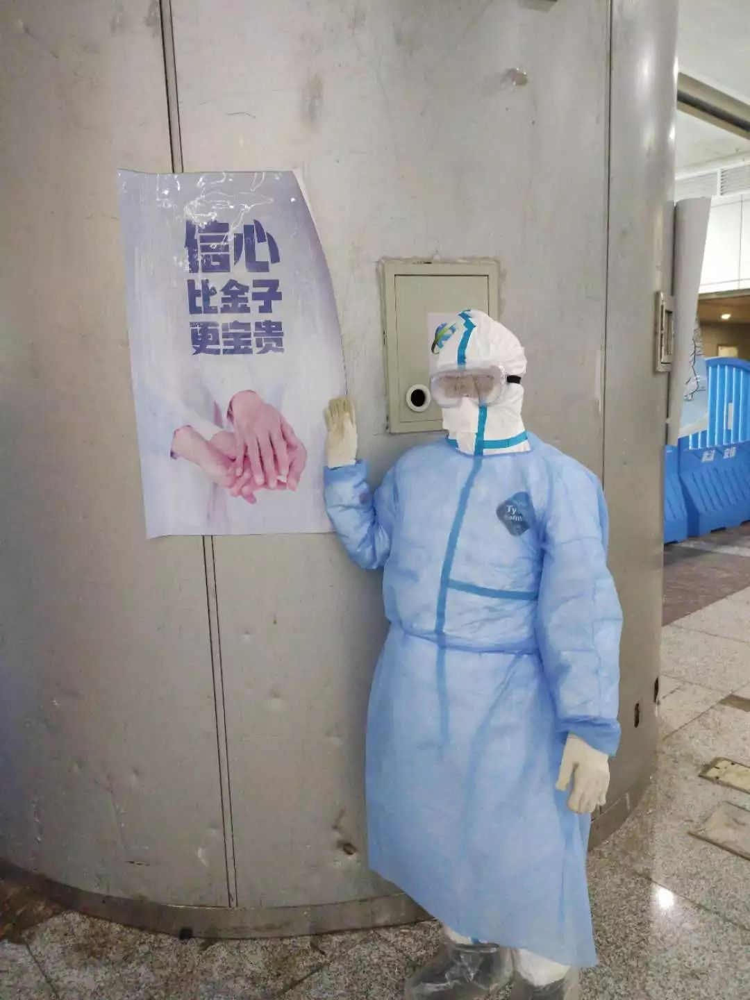
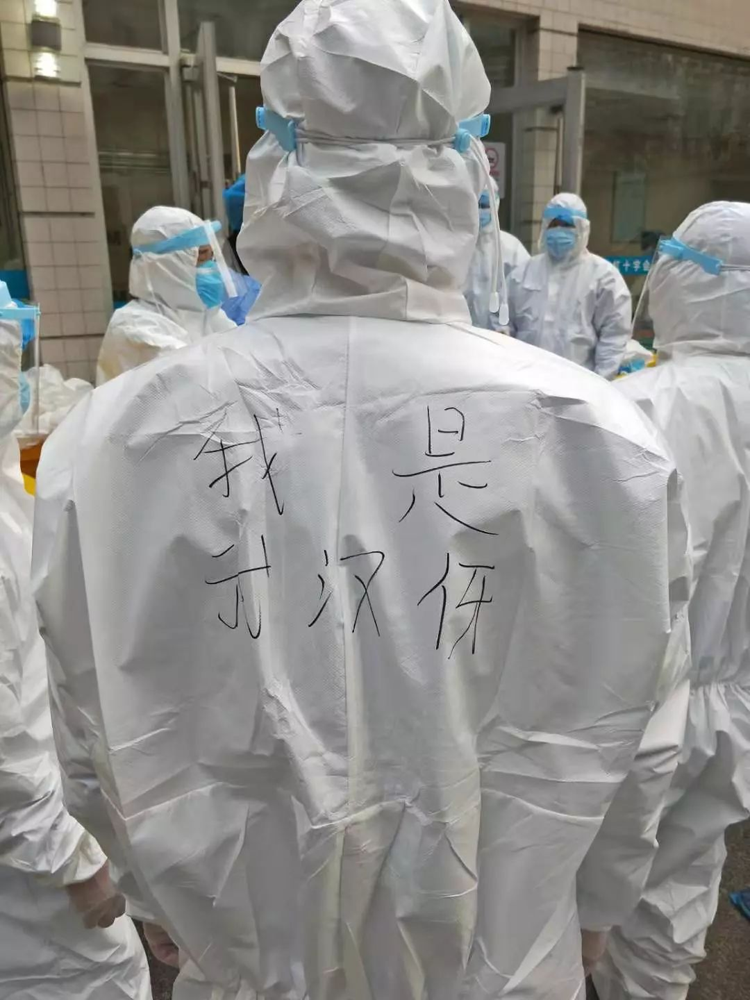

*****
*****一位护士被感染后
原文链接 备份链接 郭琴（右）与同事。受访者供图 作者 杨杰 编辑 从玉华 新冠肺炎康复后，武汉大学中南医院的护士郭琴复工了。“看我站在那里，病人心安。”郭琴在自己躺过的隔离病床前，护理新的病人，“我的出现，即使不说什么，也是鼓励。” 短 …
***** *****
*****
*****疫情暴发后的武汉，不止一家医院出现保洁人员紧缺的情况。在人手告急的情况下，江汉、江岸、汉南等多个区的城管部门采取行动，号召员工支援保洁工作。一批又一批环卫工人告别街头，开始忙碌在武汉市的各家定点医院和方舱里。*****

进入病区时，保洁员需要穿着全身防护服。受访者供图
文 | 新京报记者 祖一飞
编辑｜胡杰 校对 | 李世辉
►本文约4275字，阅读全文约需8分钟
穿上防护服走进重症隔离病房，满彩美总有一种上前线的感觉。
她既不是医生，也不是护士，而是武汉市江汉区城管局的一名环卫工。
往常每个工作日，满彩美会和同事一起，将8.4公里长的中山大道清扫干净。2020年农历大年初一，她照常去单位上班。开会时得知附近医院急需人手做保洁，局里号召员工们自愿参加。
35岁的满彩美悄悄报了名。“说不害怕是假的，就觉得在队伍里我也算年轻，这个工作需要有人站出来。”
接受完防护培训，她和十几名同事被派往武汉市红十字会医院，当天夜里便清理出100多桶垃圾。医院的人透露，由于缺少保洁，那些垃圾已经堆了三四天未处理。
疫情暴发后的武汉，不止一家医院出现保洁人员紧缺的情况。在人手告急的情况下，江汉、江岸、汉南等多个区的城管部门采取行动，号召员工支援保洁工作。
一批又一批环卫工人告别街头，开始忙碌在武汉市的各家定点医院和方舱里。
从反光衣到防护服

工作调整后，满彩美身上最明显的变化在于衣服。
上街清扫时，为了提醒来往车辆避让，她需要穿着醒目的橙色工作服，上衣和裤子上缝有银色反光条。到了医院，她改用全身防护服武装自己，“就像医护人员穿的一样。”

武汉市红十字会医院内，满彩美在转运垃圾。受访者供图
事实上，环卫工进医院前所接受的培训，最主要的内容就是学习如何穿脱防护服。
满彩美很快熟悉了整套流程。进病房楼之前，她需要提前换上防护服，戴上手套、口罩和面罩，工作期间遇到任何情况，也不会贸然打开防护服。结束后仍要按照流程一层层脱掉，同时做好消毒。
流程的繁琐，不是所有环卫工都能理解。刚来医院的时候，一位50多岁的环卫工在病区脱了防护服上厕所，出来后又穿上。吓得满彩美紧张了好一阵儿，叮嘱对方这样做很危险。
按照防护要求，保洁员中途上厕所需要走出病房楼，脱掉防护服做完消毒后才能去，返回时需要再换上一身新的防护服。
为了省下这套防护服，满彩美起床之后便开始控制饮水，基本能做到工作4个小时不上厕所。像她一样，大多数保洁员保持着一天两套防护服的消耗量，只在中午吃饭时更换一次。
物资有多紧缺，身在医院的她们感受得到。满彩美发现，每天领到手的防护服并不是固定样式，前一天是纯白，第二天有可能是带条纹的，每天穿的是来自不同厂家不同批次的货。“所以我们也想帮医生节省点，能省一件是一件。”
做惯了街头清扫，满彩美反倒觉得医院保洁的工作强度更大。在这里，一些自动化设备难以使用，只能靠人力解决。“再加上医院开着空调，我们又要穿防护服，干完活经常全身是汗。”
和她相比，安全员李佳的不适感要强烈些。作为武汉国际会展中心方舱医院的一名保洁领班，李佳主要负责协调调度班组的保洁员，确保垃圾到达指定的转运车上。他大多数时间是在方舱外协调指挥，但基本上每天都要进去忙活几个小时。“队员们吃饭的时候，我就得进去帮他们盯着。一旦进去事情就比较多，本来是20个人做的事，这时候需要我一个人做。”
由于鼻炎严重，每次穿好防护服、扎严口罩，李佳总觉得不能正常呼吸。鼻涕流下来，他也不能擦，只能等工作结束后再清理。由于天天都要用酒精消毒，同班组的一些人还出现了皮肤不适的症状。
“没什么不能接受的”
**
方舱启动的前一天，李佳就已经进驻。那天晚上，他从九点一直忙活到第二天凌晨五点半。回定点酒店眯了不到一个小时，又赶在七点左右回到方舱，继续工作到下午四点。

李佳在方舱医院的抗疫海报前留了张工作照。受访者供图
李佳说，在病区保洁，除了打扫卫生，遇到其他事也要管。比如病人吐了，他要拿拖把去清理；房顶漏水，他要把地拖干，湿掉的被子全部拿出去换新；离开方舱之前，还要顺手拖几桶垃圾出来。
在城管工作时，李佳负责各类车辆的运行安全，遇到突发事故及时处理。如今，他需要面对清理呕吐物这类脏活，但已经顾不上在意。“到了现在到这种情况，没什么不能接受的。”
与方舱医院主要收治轻症患者不同，满彩美面对的是一间间隔离病房，里面住有病情不一的新型肺炎确诊病患。她心里多少有些压力，工作时经常自我开导。“心里东想西想的，那肯定会害怕，我总是往好的方面想。”
满彩美说自己尽量保持着平常心。清理垃圾、扫地拖地，按照顺序逐步进行。碰见病人咳嗽，也不会刻意去回避。有病人因为打吊针没办法移动，请她帮忙把饭盒收拾一下，她也从不拒绝。
一次清扫病房时，一位老年患者主动和满彩美聊天，抱怨有些病人不注意卫生，说保洁员很辛苦，病人应该体谅。听到这番话，满彩美心里多了几分暖意。
同样的关心，她也在医护人员身上感受过。刚来的时候，一位护士询问她是否是来帮忙的，嘱咐她和同事一定要注意安全，做好防护。其余时间，她们各忙各的，几乎没什么交流。
我们不做谁来做？
**
按照原计划，在武汉市红十字会医院工作7天后，满彩美需要隔离14天。但仅仅过了3天，她再次接到通知，前往新建好的方舱医院做保洁。“还是要进到病区，就暂时不需要隔离了。”
从大年初一到现在，满彩美一直住在单位安排的酒店里，没和家人见过面。每天结束工作之后，她习惯打视频电话报个平安，看一看丈夫和孩子。
去方舱的前一天，满彩美把情况如实告知孩子，说自己回不了家了，要重新换个位置上班。“孩子问我，为什么又要你去，为什么不换别人？”
满彩美只能说其他人也在岗位上忙事情，再加上14天隔离期未到，她本来也不能回家。“这个是我们的工作，不可能不去，我们不做谁来做？”
一同在方舱医院做清洁的还有60岁的范贤平。得知医院需要人手做保洁，只剩下几个月就退休的他也报了名。
儿女听说后和他吵了起来，“他们问我这么大年纪了，还做这种活儿干啥。反对也没办法，我是党员，这种关键时刻起码要起带头作用吧。”
谈到自愿报名的初衷，李佳的回答同样很简单，“我也做点贡献，毕竟当过兵。”
进入方舱工作的第四天，李佳迎来了36岁生日。鼠年是他的本命年。生日这天，他却连老婆孩子的面也没见着。
得知他生日，队长送来两个小蛋糕，即便生日过得有些简单，李佳已经觉得很满足。
忙完打开手机，他看到了女儿准备的礼物。那是用橡皮泥捏成的彩色小蛋糕，女儿捧在手心里，妻子给拍了张照片。
“女儿早上醒了抱着娃娃自言自语，说爸爸一个月都不能回，难道我还高兴吗？爸爸是我唯一喜欢抱的人。”收到妻子发来的这段话，李佳只回了五个字：爸爸在吃苦。
连续几天见不到家人后，李佳还是有些担心。他的妻子也在城管系统工作，有着4个月的身孕，还要照顾5岁的大女儿。丈夫不在家，她只能带上孩子去单位上班。
年前，一家人搬了新家，孩子的幼儿园也换了离家更近的。李佳原本计划过完年就请年假，带老婆孩子出去旅旅游。想着孩子快上小学，妻子也快生二胎了，以后很难再有这样的空窗期。却没想到，疫情暴发打乱了所有计划。
有人骂，有人谢
**
让李佳担心的还有岳父岳母。两位老人已经连续发烧十几天，不久前去医院照过CT，医生看完，觉得不太像新型肺炎，告知需要试剂盒才能确定。由于回不了家，过去一段时间，李佳只能通过电话关注着老人的情况。
在方舱医院，他偶尔也会观察玻璃门后面的病患。那些心态好的病人，有的看书，有的跟着护士做操。“我只希望他们快点好起来，疫情快点过去。”
范贤平说，容量240升的垃圾桶，他们每天要处理300桶，早中晚各清扫一次。除了防护服等医疗垃圾，最主要的还是饭盒、牛奶瓶和用过的纸巾。清扫完厕所，污物都要集纳消毒后由专人运出。
由于全天都待在方舱内，范贤平与病人的接触更多，来到方舱的前五天，他就被病人骂过三次。
有病人找到他，想让他进病房收拾垃圾，但医生交代过，病房里的人症状稍重，不允许保洁人员进入。“虽然说防护服都是一样的，但是我们没他们专业，一个环节搞不好就有可能感染。”
范贤平没按对方要求进病房，过了一刻钟，对方突然开始骂脏话。

江汉城管的一位职工在防护服上写下“我是武汉伢”。受访者供图
另外两次被骂是因为消毒的事。有病重患者转移到火神山医院后，旁边的病人想让工作人员来消毒。范贤平告诉他们，医院有专门的消毒人员，他用的是消毒液只能拖地，没办法直接给床位做消毒。一番解释之后，对方还是不理解，责备之后撂了几句脏话。
遇到这种情况，范贤平只能自我宽慰，“他们也可能不是针对我，就是在里面待的时间长了，心态不好。”
他不是没有收到过感谢。一次，有病人吐在了隔离区门口，他赶忙跑去收拾。旁边的一位病人见了直说谢谢，解释说他们也不是故意吐在地上，只是生病了没有法控制。
方舱里的这些情况，计鹏飞都看在眼里。他是江汉城管派驻在方舱医院的现场负责人之一。发现保洁员被骂的情况后，只能边安抚边作解释，“毕竟他们得了这个病，心态肯定没那么好，还是要多体谅一下。”
有时候，他也能理解病人。“例如转运垃圾的时候，保洁员需要拖着垃圾箱从病区穿过，那个轮子产生的噪音比较大，可能会吵到他们。”但条件有限，他没办法改变设备，只能建议大家尽量减少摩擦。
在他看来，大部分病人还是比较友好，清扫、消毒的时候都会感谢，保洁员们听了会觉得很满足。
他也提到，个别患者并不是特别在意卫生，导致清扫之后难以保持，因此他十分理解保洁员。
没有一个人退出
**
计鹏飞介绍，目前江汉城管共有5支清扫队伍、共计120名环卫工人在武汉国际会展中心方舱做保洁。其中既有编制人员也有合同工，每个队分3个班组，一个班组7人左右，每天三班倒。此外还有一些领班负责管理协调工作，他们要从早上7点一直忙到晚上11点。

城管局安排专车，每日接送环卫工上下班。受访者供图
带着这么多人在方舱医院工作，计鹏飞最担心的还是安全问题。每天进场作业前，他会安排领队现场监督队员们穿好防护服。出来的时候还会再检查一遍。早晚进出酒店，也有专人量体温。“如果队员有哪里不舒服，会得到及时处理。”
尽管已经强调了很多遍，计鹏飞还是会每天讲解一次防护要求。他知道环卫工的文化水平不是很高，很多事情说一遍可能听不懂，所以尽可能用大白话告诉他们应该怎么做。
在他看来，一线工人是最辛苦的。城管局每天会给队员一人500元的特殊补贴。供应的午饭、晚饭也和病人一样，外加一瓶牛奶。由专人从外面做好送进方舱区。
作为管理人员，计鹏飞最感动的还是一线保洁员的坚持，他说，到目前为止，没有一名员工找到他要求退出。
“他们说生在武汉、长在武汉，现在这个情况出份力也是应该的。医护人员都在前面顶着，我们也一样。”
满彩美也一直在继续工作。有时候干累了，她会和同事们聊聊天，互相安慰之后继续干活。“我觉得大家都蛮勇敢的，没有一个人退缩。”
*洋葱话题*
*▼*
*你想对一线工作者说什么？*
*后台回复关键词*****“洋葱君” ，加入读者群****
***推荐阅读***


被治愈的二胎母亲：黄石首例确诊孕妇治疗9天出院

*********既然在看，就点一下吧****** *********
*********
原文链接 备份链接 郭琴（右）与同事。受访者供图 作者 杨杰 编辑 从玉华 新冠肺炎康复后，武汉大学中南医院的护士郭琴复工了。“看我站在那里，病人心安。”郭琴在自己躺过的隔离病床前，护理新的病人，“我的出现，即使不说什么，也是鼓励。” 短 …
原文链接 备份链接 武汉紧急改造启用的多个临时性“方舱医院”，承担了此次疫情中数量最大的隔离任务。虽然时间紧任务重，方舱医院的内部运行已经从最初的忙乱走向有序 文 | 《财经》记者 刘以秦 编辑 | 谢丽容 2月6日凌晨3点，在武汉一家 …
原文链接 备份链接 除夕夜，我跟儿子开了视频电话。他才7岁，不太懂现在外面发生了什么，为什么自己不能出去玩。他喜欢玩游戏，我就告诉他，外面有很多病毒，病毒就是一种怪兽，妈妈在外面打怪兽。然后他说，“妈妈，我要去你那里，跟你一起去打怪兽！” …
原文链接 备份链接 武汉市各区正在加紧把所有发热人员集中隔离，并进行全部发热人员的检测，目的是让疫情全部暴露出来，之后疫情防控也将从“攻坚战”转至“歼灭战” 图/法新 文 |《财经》特派武汉记者 言清 王小 编辑 | 王小 “今天的会非 …
原文链接 备份链接 “招呼好乐乐、可可。”登机后，晓阳立即给男友林峰发了微信，不放心他们一起养的两只宠物，其实是更不放心男友。 “你才要照顾好自己。” “要登机了吗？” “那俩小的你不用担心。” “一落地记得给我打个电话。” 男友光速回 …